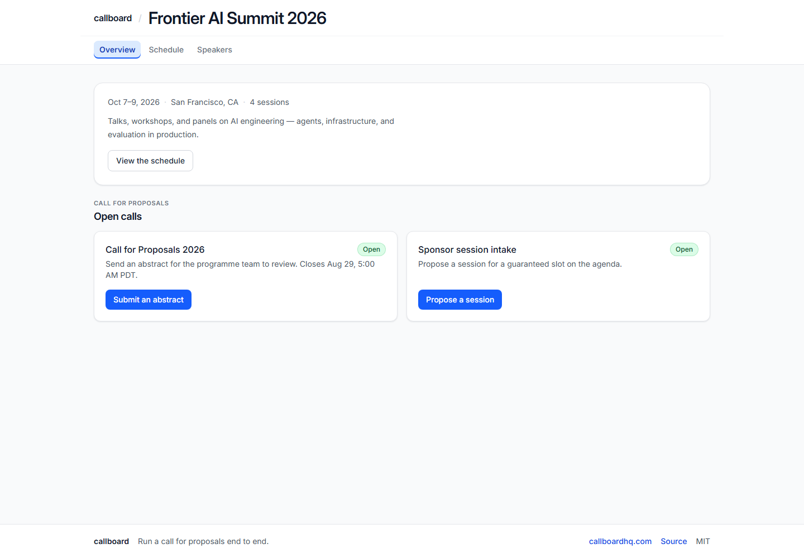
01 · [object Object]
Public event
A branded entry point for speakers and attendees.
/e/frontier-ai-summit-2026
Captured 2026-08-13T00:11:17.417Z
Real seeded product surfaces, ordered from public intake through organizer operations and speaker follow-through. Appearance supports the story; the release ledger and automated checks prove behavior.

01 · [object Object]
A branded entry point for speakers and attendees.
/e/frontier-ai-summit-2026
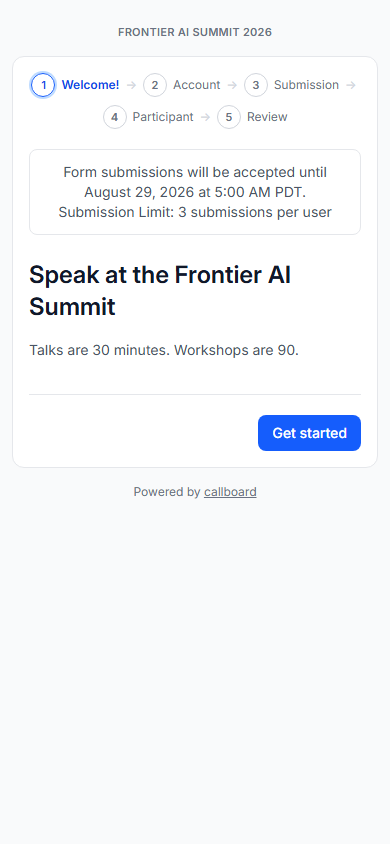
02 · [object Object]
The mobile-first starting point for a real seeded submission form.
/submit/frontier-ai-summit-2026/000000fo-0000-4000-8000-000000000001
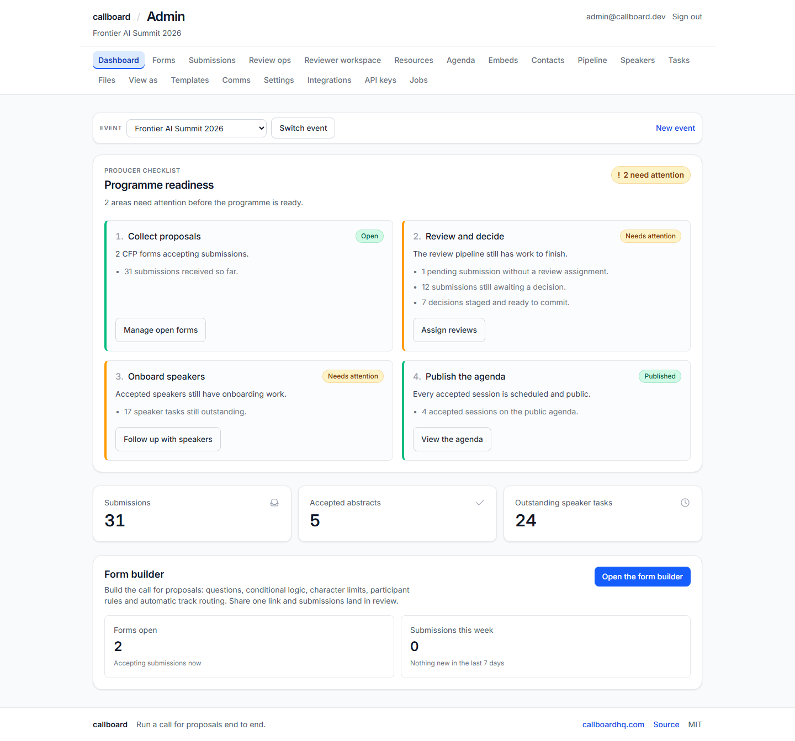
03 · [object Object]
Event health, counts, and the organizer's next actions.
/admin
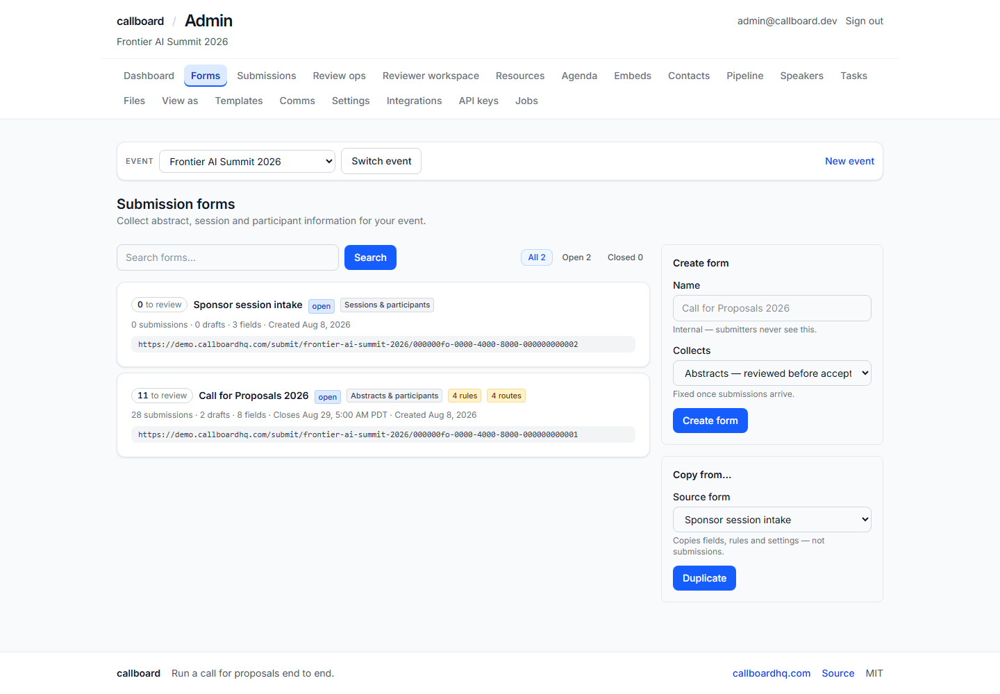
04 · [object Object]
CFP configuration, routing, validation, and publishing controls.
/admin/forms
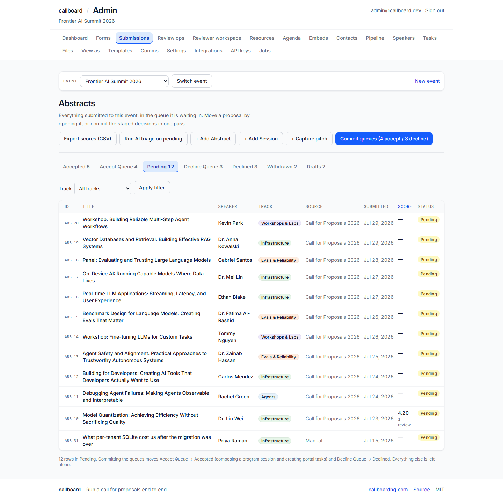
05 · [object Object]
Seeded proposals in the pending decision pipeline.
/admin/submissions?tab=pending
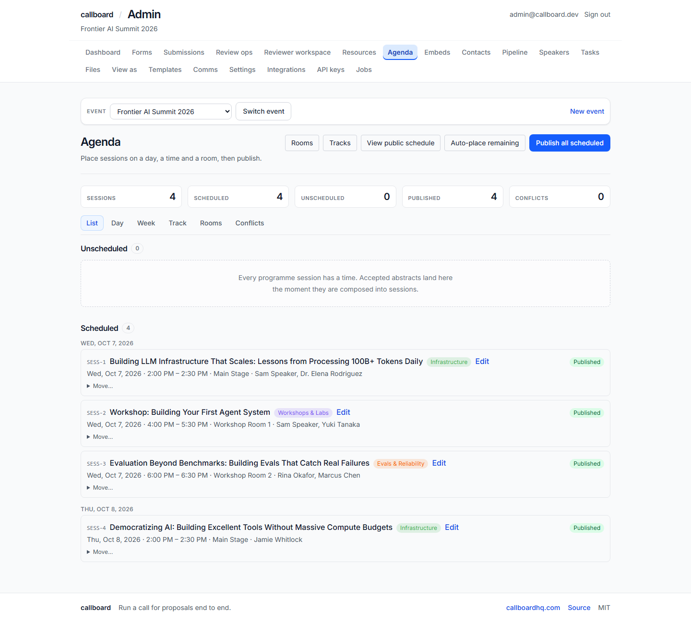
06 · [object Object]
Room and time placement with dedicated conflict visibility.
/admin/agenda
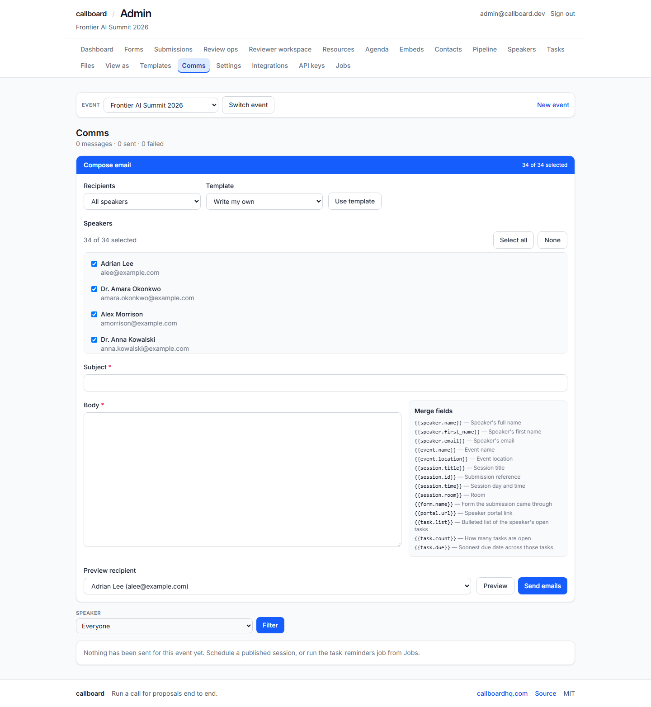
07 · [object Object]
Templates and delivery history for speaker follow-through.
/admin/comms
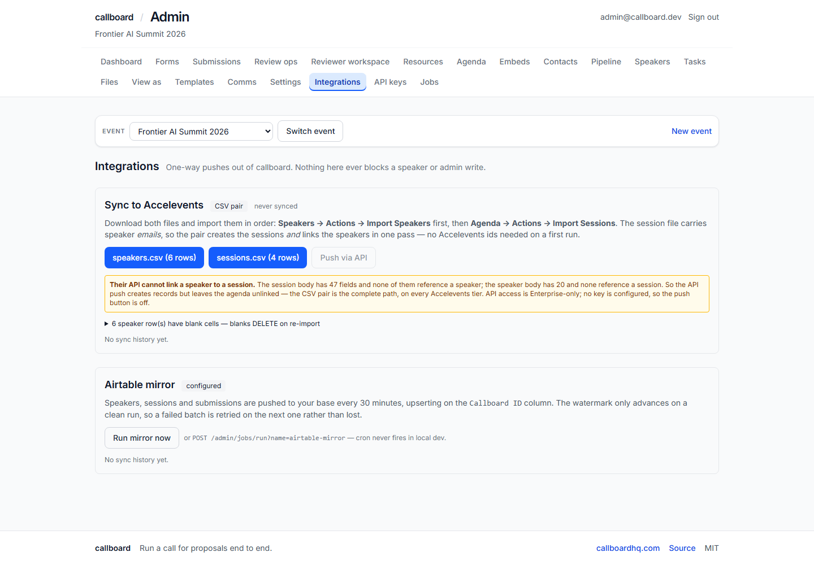
08 · [object Object]
Portable data paths without putting integrations in the critical path.
/admin/integrations
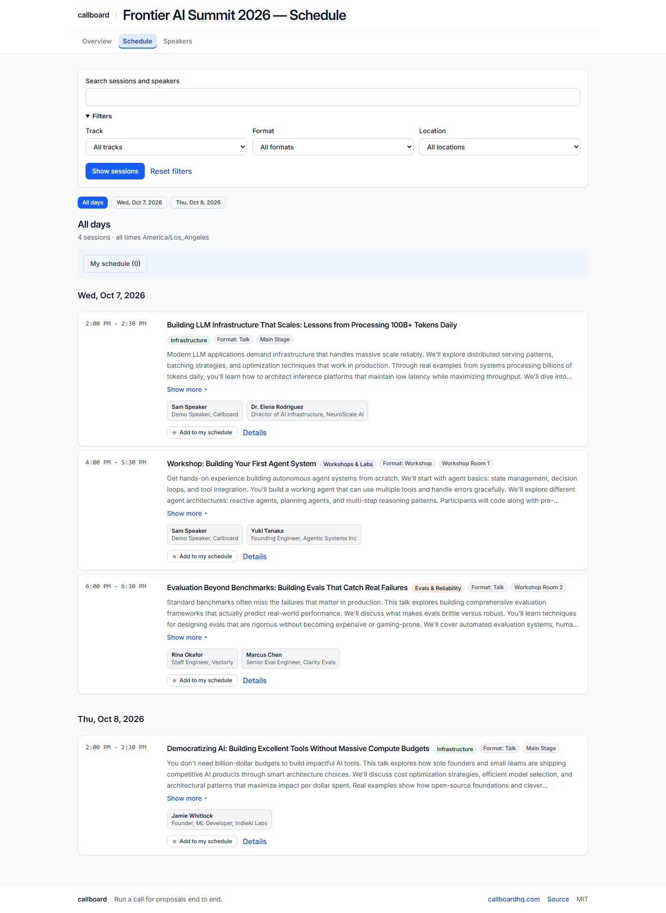
09 · [object Object]
The published schedule turns organizer work into an attendee-facing outcome.
/e/frontier-ai-summit-2026/schedule
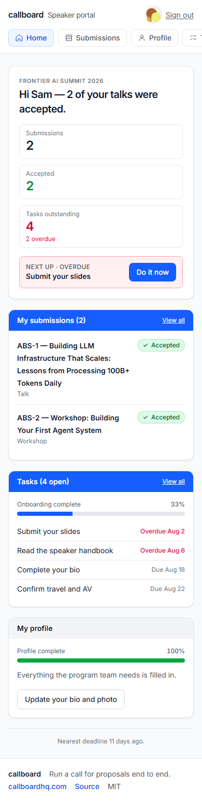
10 · [object Object]
Status and one clear next action on a phone-sized screen.
/portal
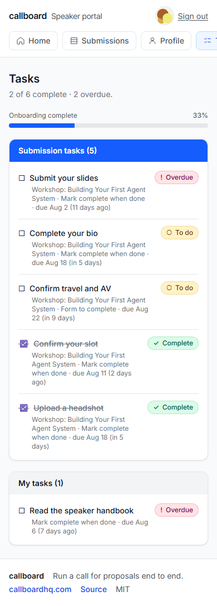
11 · [object Object]
A focused checklist for onboarding and event readiness.
/portal/tasks
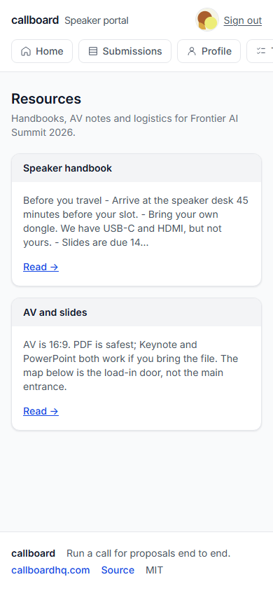
12 · [object Object]
Organizer-provided guidance available in the same portal.
/portal/resources